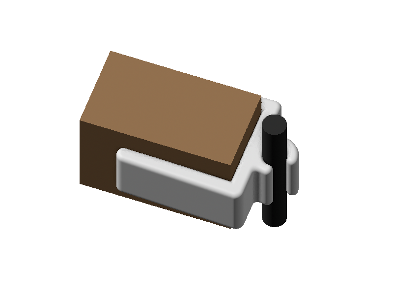
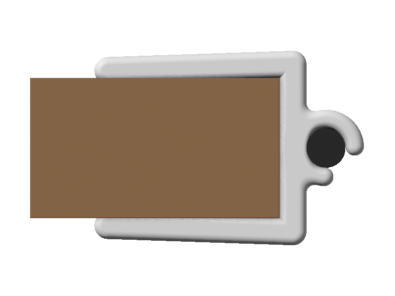

desk-cable-clip
Drafted with AI, not yet reviewed
by keycap
Desk cable clip: a clamp that pushes onto a desk’s edge, with a ring in front that a cable snaps into, so that a charger’s lead waits at the edge instead of falling behind the desk.
The clamp’s jaws close in a little towards their tips, so that they spring open over the desk and grip it; no screws, nothing left on the desk. The ring’s opening is narrower than the cable, which pushes in past it.
The clip is drawn as its side, a pen’s strokes, extruded with rounded rims. It prints lying on that side, as drawn, so that the layers run round the clamp and the ring, the way they flex.
Unverified: the clamp’s grip, the cable’s snap into the ring, and the print.


Files
Source
// SPDX-License-Identifier: 0BSD // // Desk cable clip: a clamp that pushes onto a desk's edge, with a ring // in front that a cable snaps into, so that a charger's lead waits at the // edge instead of falling behind the desk. // // The clamp's jaws close in a little towards their tips, so that they // spring open over the desk and grip it; no screws, nothing left on the // desk. The ring's opening is narrower than the cable, which pushes in // past it. // // The clip is drawn as its side, a pen's strokes, extruded with rounded // rims. It prints lying on that side, as drawn, so that the layers run // round the clamp and the ring, the way they flex. // // Unverified: the clamp's grip, the cable's snap into the ring, and the // print. // view: camera -70 55 // view: camera top // --- Parameters --- const PREVIEW = true; // draw the desk's edge and the cable const DESK = 18.0; // the desk's thickness const DEPTH = 22.0; // how far the jaws reach in over the desk const SQUEEZE = 0.8; // how much each jaw closes in at its tip const CABLE = 5.0; // the cable's diameter const OPENING = 0.75; // the ring's opening, as a fraction of the cable const T = 3.5; // the clamp's thickness const RING_T = 2.4; // the ring's, thinner so that it flexes const WIDTH = 12.0; // along the desk's edge: the printed height // --- Clamp --- // The desk's edge is at X = 0, the desk at X < 0, its top at Y = DESK. // The jaws' centre lines run half a thickness off the desk, closing in // towards their tips. let top = DESK + T / 2; let bottom = -T / 2; let front = T / 2; let clamp = stroke([ [-DEPTH, top - SQUEEZE], [front, top], [front, bottom], [-DEPTH, bottom + SQUEEZE], ], T); // --- Ring --- // In front of the clamp, halfway up; its opening faces down and forward, // so that the cable hangs out of it towards the floor. The opening's // half angle comes from its chord on the ring's inside. let r = CABLE / 2; let centre = [T + r, DESK / 2]; let half = asind(OPENING); let facing = -45; let ring = arc_stroke(r + RING_T / 2, [facing + half, facing + 360 - half], RING_T) .move(centre); // --- Clip --- let side = union_round(clamp, ring, 1.5); draw(side.extrude([0, WIDTH], #{round: 1})); // --- Desk and cable --- if PREVIEW { let desk = cuboid([DEPTH + 10, DESK, WIDTH + 10]).move([-(DEPTH + 10) / 2, DESK / 2, WIDTH / 2]); draw_rgb(desk, 0.65, 0.5, 0.35); draw_rgb(cylinder(r, [-10, WIDTH + 10]).move([centre[0], centre[1], 0]), 0.2, 0.2, 0.2); }